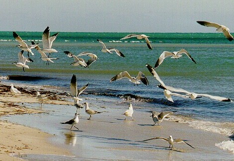

Al
regreso de las gaviotas...
Al
regreso de las gaviotas...
| Autor: Domingo Hernández (Cuba) |
¡Nuevo! Enfermo
Enfermo
Será el último de los pedazos,
encanto del siglo ancestro,
enorme siglo de revoluciones inauditas,
enfermo de metáforas, de poemas inconexos,
de barricadas polvorientas y techos en las aceras;
secretarios, presidentes y partidismos,
guerras sin balazos en el costado,
plazas de sudorosas proclamas,
ansiedad en los manteles;
enferma el arca se hunde en un mar
de calamares, hipocampos y anguilas procaces;
un brazo antiguo se alza y tiemblan sus dedos huecos,
la batalla por Troya no llega,
los caballos de hastío se van ahogando;
Homero de pronto levanta los ojos ciegos,
una tea en sus manos trémulas se alza,
arde Troya en la noche quieta;
el fuego de los enemigos grita
a Troya nos están invadiendo;
los nuevos soldados ríen,
no huyen a buscar las armas,
enferma la consigna anda a tumbos los callejones. ..
Estoy sobre una almohada de espumas incondescendientes, Y no tengo el temor a decirlo, El puerto está lejos, pero habita
en mis alas, . . .
|
 |
Algunos aportes anteriores
Hipnosis
Vienen las liebres que salieron de pronto del sombrero amarillo
caballos atravesando la sala de mi casa penetran al cuarto
de improviso se tornan bicicletas aladas
donde las liebres en la silla pedalean sin cesar;
una nube se desbotonó inadmisible de seguir colgando del cielo;
llueve en no sé cuál sitio a raudales mi padre toca en la
/puerta;
viene de caminar las calles preñadas de charcos y aluviones
mi padre me abraza con la lluvia como campanillas transparentes
esparcidas en toda la extensión ilustre de su cuerpo;
mi padre llegó con el mismo sombrero amarillo
por donde emergieran las liebres minutos antes;
los caballos se evadieron no sé por cuál resquicio
y peligran aparecer como fantasmas debajo de la lluvia
que sólo un relámpago me los hizo detectar
antes que abriera los ojos en medio de la madrugada...
De un poema sin título
o escucho huellas en la noche
A caminar esta noche
se fue por mi cuerpo exiliado;
se hizo volcán desvelado
sincrética de derroche.
Como jinete en mi lomo
fue deshaciendo camino,
el exilio que rompiendo vino
mi huella con paso de plomo.
Puedo escribir de recuerdos
en otra tierra lejana,
y puedo engrosar la vana
esperanza de mis bieldos.
Esperanzas de volver
aunque las semillas sueltas,
con el viento ya disueltas
se escaparan a tropel.
Y cuánto he ido perdiendo,
y corazón desvestido;
cuánto tronco carcomido
por la nostalgia gimiendo.
Reloj deshecho de lluvias
como una barca sin puerto,
en mi párpado despierto
germinado como alubias.
Y mi padre en el sillón,
mi madre de hueso dormido;
porque los dos ya se han ido
como el ala de un gorrión.
La noche rompecabeza
de cuchillos invisibles;
son las hojas insensibles
de este exilio por mi cabeza.
Se escapa el tiempo en mis manos;
cuánto huir el de los veranos…
 Sinfonía nostálgica para una tarde de verano
Sinfonía nostálgica para una tarde de verano
Tu vestido rosado ondea
en la tarde frambuesa del domingo;
( o quizás le diste el color extraño,
tan poético e irreal cuando desciendes,
las callejuelas enquistadas de recuerdos. )
Serena la tarde escapa
por entre acanalados refugios;
la brisa vaga y sopla
sus dedos de veranas torres,
y en los portales gorjea
el columpio de los sillones,
la verde enramada que guarda
el ojo vivaz de los camaleones.
Tú vienes; nostálgica fruta bajando
el dulce de tu cuerpo mítico;
reverbera la tarde lejos
detrás de tu cuerpo fúlgido .
 CRISÁLIDAS
CRISÁLIDAS
Hemos cruzado las piernas,
nos hemos fumado la noche
inveteradamente,
sin agonías ni sobresaltos;
hemos servido el café
de una tarde en el centro
que una mesa dibuja
su neblina de perfumes
irresistibles;
nos hemos de beber
el tiempo de golpe
para sujetar la ignominia
de morir lento, sin regreso
al origen que describe
el misterio de los aullidos
impenetrables.
 “El padre generoso " (Cuento)
“El padre generoso " (Cuento)
Un día nuestro padre (que después fue abuelo y bisabuelo y tatarabuelo), abrió la puerta de par en par y con lenguaje elocuente nos dijo:
Y creímos fielmente en las palabras insignes de nuestro padre, como se cree en un dios, un sabio o un profeta.
Nos puso un médico que atendiera nuestros males y nos colocó a estudiar en una escuela; pero nos deshizo las alas, para que no volásemos muy alto; por el peligro a que
se fundieran con el sol, como en la leyenda de Ikarus.
Más, nuestro padre, después abuelo, bisabuelo, tatarabuelo, solía amarrarnos a la pata de la mesa en castigo por olvidar alguna vez que otra, su virtud de ofrecernos un
recetante para curar nuestras endemias y un paraninfo para aprender las matemáticas, la ciencia y la historia de los héroes de las guerras universales.
Aunque a nuestro padre, en tanto fragoreo de hacernos un futuro mejor, omitió de nuestras vidas las consuetudinarias sesiones de alimentos y el culto a Dios; a tal punto,
que en cierto día se volvieron a abrir las puertas de nuestra casa inusitadamente, y nuestro padre, quien después fue abuelo, y bisabuelo y tatarabuelo, con el enojo
metido entre las venas y el rostro transformado en volcán, nos alertó, que desde entonces, Dios, los templos y los guardianes del templo, se habían confabulado
aprovechando nuestra inocencia, para apuñalarnos por la espalda; por lo que deberíamos tenerlos desde ese instante como enemigos irreconciliables.
Lo mismo sentenció con saña, del vecino el cual habitaba en la otra ribera del gran Golfo. Contra ese novicio demonio gigante, nos armó las manos y los dientes y,
por primera vez nos enseñaron a matar, con la sentencia de que era para evitarnos algún día la terrible amanecida, de indefendernos en el peligro inmisericorde
de las botas crueles del habitante de aquella región.
Desde siempre todos, comenzamos a construir una invisible torre de Babel, que se fue alargando hasta perderse en las nubes más altas.
Más, nuestro padre, quien por lo general lucubraba durante horas, desvelado como siempre en perpetua vigilia de nuestro sueño, ni tardío ni perezoso, sustituyó
animosamente las antiguas franquicias del vecino, que vivía en la otra ribera del gran Golfo. Y, como por las magias consabidas de un prestidigitador,
nos trajo a la casa a unos extraños hombres rojos, quienes venían desde el otro extremo del mundo, y a los cuales nuestro padre los concibió, como los verdaderos
" Reyes Magos ", cuyas albricias nos salvarían de la Apocalipsis.
Pero, al pasar del tiempo los adorados hombres rojos, provistos de todas las felonías y las imperfecciones del mundo contemporáneo, se tornaron de pronto en hombres
oscuros y con el rostro cubierto de algas verdes y fantasmagóricas.
Nuestro padre, convertido ya en un decrépito anciano, quien se obstinaba en no usar el báculo ni los lentes para mirar lejos; penetró como una tromba por la puerta,
(a pesar de no contar con las energías de los años mozos) y con la voz entrecortada y los ojos cárdenos, quizás por haber llorado por muchas horas, nos dijo:
- Hijos míos, de los hombres rojos no podemos esperar nada, nos han traicionado, como el mismo Judas; tendremos desde hoy que valernos por
nuestras propias fuerzas...
Pero, no teníamos fuerzas, ni sabíamos cómo se hacía la fuerza; estábamos aún aprendiendo a salir, como el Minotauro, de aquel laberinto de pasillos erráticos
que era nuestra casa, y nos golpeábamos por cada paso…
No obstante, nuestro envejecido padre, abuelo, bisabuelo, tatarabuelo, continuaba con el delirio vesánico de extraerle música a un arpa sin cuerdas.
Y, las paredes comenzaron a agrietarse y los vetustos muros de una historia aprendida durante años a fuerza de madrugadas y esmeros, se avergonzaban de
seguir erguidos sobre sus bases y se tornaban en polvos in milagrosos.
Mientras, el mar y los peces, aprendían de memoria el sabor amargo de nuestra sangre, en el suplicio de convertirnos en argonautas o en náufragos; con un derrotero
sin retorno, porque quizás para muchos fuese mejor la muerte, que seguir amarrados a una pata de la mesa para escuchar de nuestro padre, nuestro abuelo,
bisabuelo y tatarabuelo, de que estábamos salvados de la Apocalipsis.
 REINSERCIÓN
REINSERCIÓN
Te aturdes y no te percatas
que afuera llueve a vendavales
- millones sin paraguas,
zombis caminando
debajo de la lluvia-,
y riendo aunque no riendo,
como los músicos de una orquesta,
los payasos en el circo.
Te aturdes y no caminas
hacia ningún sitio inevitable,
al círculo sin alumbrados públicos
de la luna;
que no te piensas la puerta
y andas sonámbulo entre paredes,
al habla de un teléfono,
a gritos, repicando en la mesa,
en la lengua de sol que penetra
por la ventana,
y te caes sobre las sillas,
y olvidas, y callas,
y dejas que el agua de los grifos
llene de sonidos las habitaciones,
y te quedas sordo,
sin mundo que te abarque.
 Yo mismo
Yo mismo
Quién soy, me pregunto, y deshilvano esta
urdimbre de ideas que se
obstina en cercarme el entendimiento;
no creo ser algo importante, pero sí hipotéticamente acrobático
para equilibrarme metafísicamente sobre el vuelo de un tren,
que descubre la noche y el silencio con sus vaporeos y silbatos;
y el choque de las olas inmisericordes, que vienen a desgajarse
en la quilla sediciosa de una barca,
y en ese aletear de gaviotas que rompen
y al acorde nos vuelven las melancolías.
Soy un poema sin versos,
pero el árbol prendido a la tierra desde el invierno a la primavera:
así que tengo sombra y padezco del viento y las hojas se marchan
y la nieve me torna de soledades.
Quién soy, una nube acaso, una lluvia que se desprende por la ciudad
y corre a esconderse en las alcantarillas,
y que se contenta con cualquier niño travieso
lanzando sus barcos de papel;
navegantes atrevidos luchando contra la inclemencia.
Soy un deslumbrado que percibe el aroma casi femenino de la noche
o atisba el olor sinestésico de las fábricas al bullir de los
pasos en
/ la madrugada.
Me apasionan los aviones desprendiendo el vuelo en los aeropuertos,
como enormes pájaros de colores,
o la magia de una mujer en silencio,
que mira y piensa a un niño que juega con una pelota policromada
/ en la calle.
Domingo Hernandez Varona
nació en Cuba en el año 1952. Es Licenciado en Derecho. Reside en la ciudad de Louisville, KY, U.S.A. Sus Poemas fueron publicados en Revistas, boletines literarios y antologías en su país; obtuvo premios y menciones en Poesía y Narrativa en Cuba en diversos Concursos Literarios convocados por Organismos culturales y eventos de Arte y Literatura. |